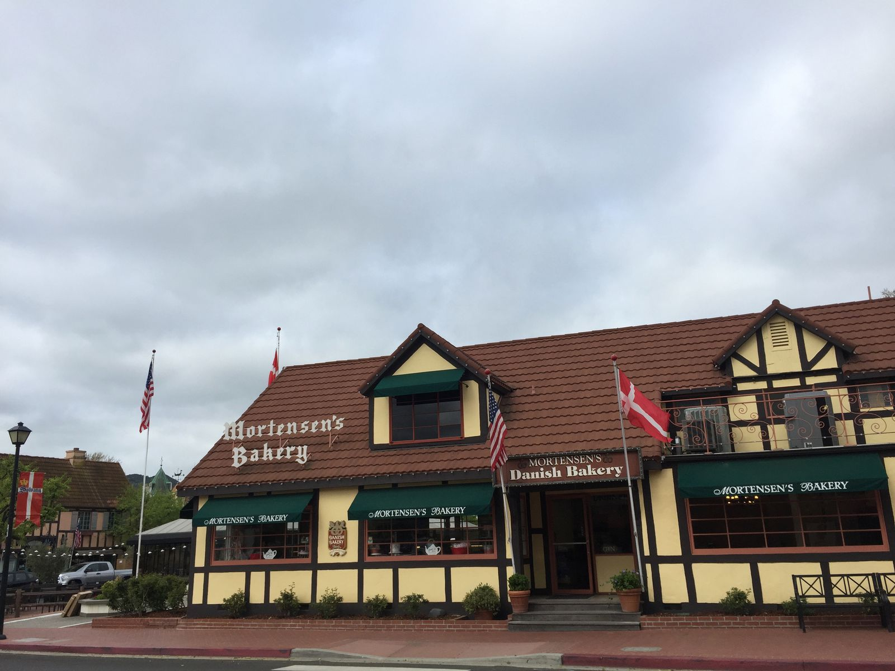
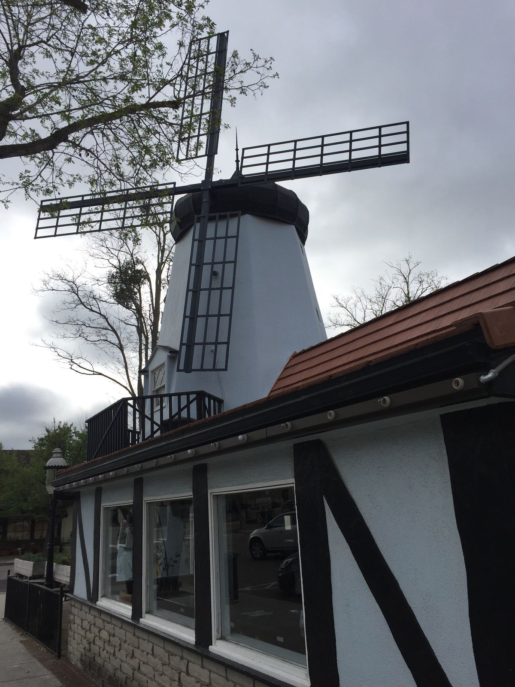
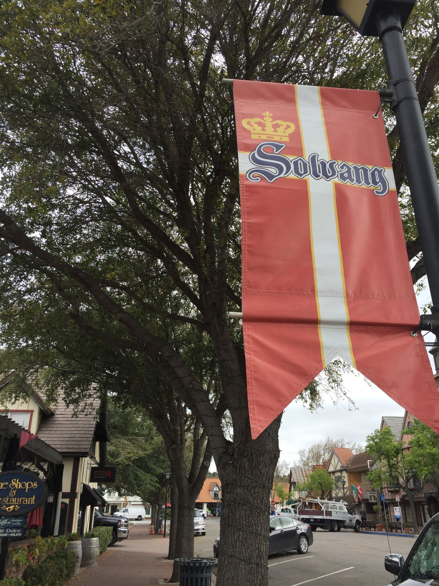
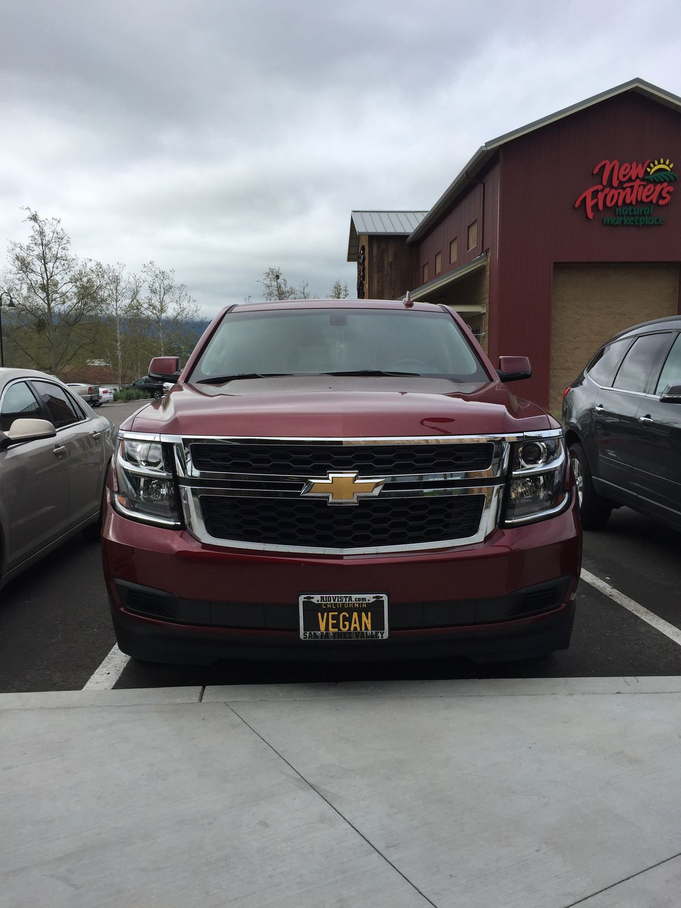
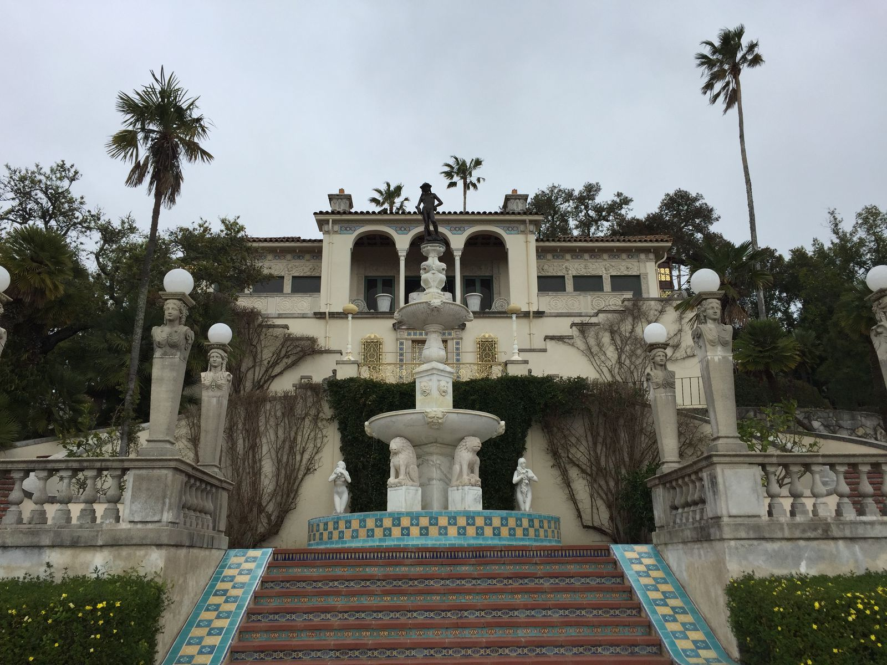
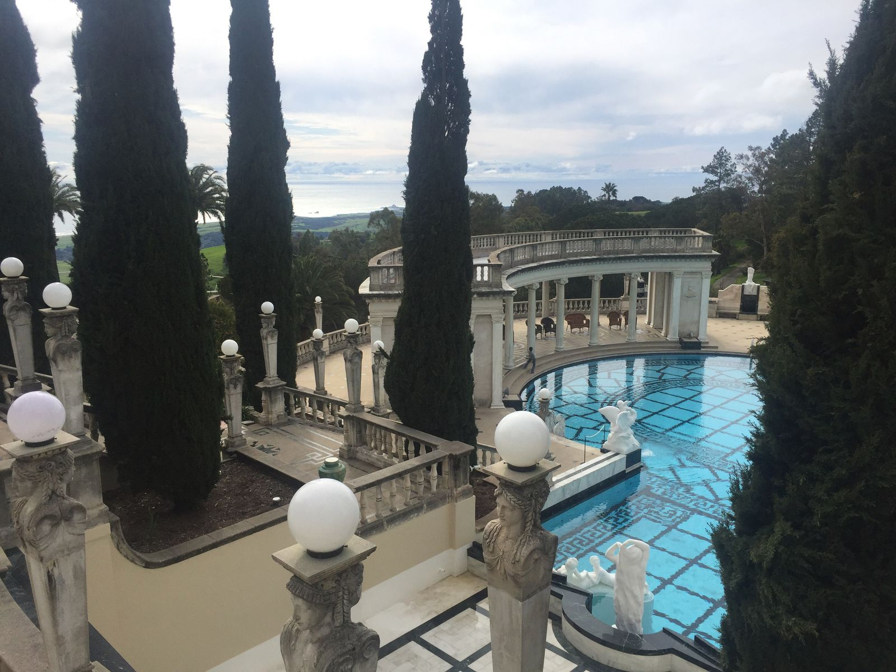
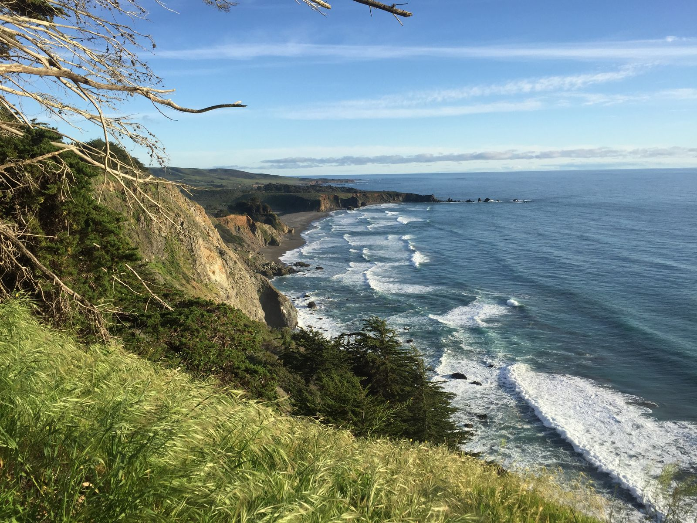
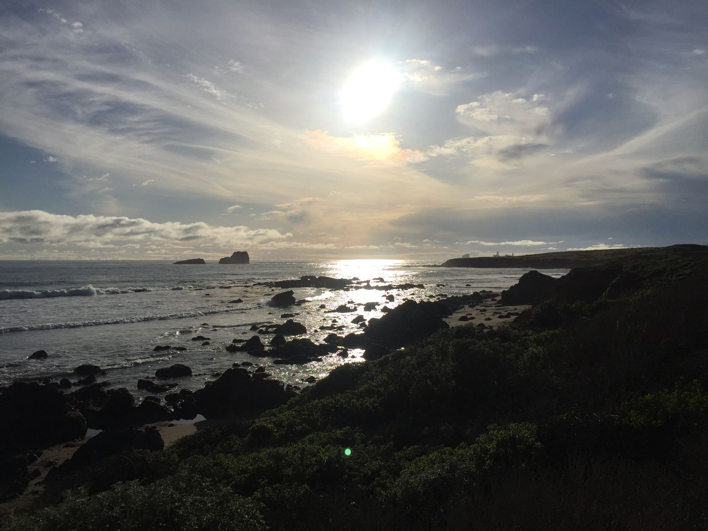
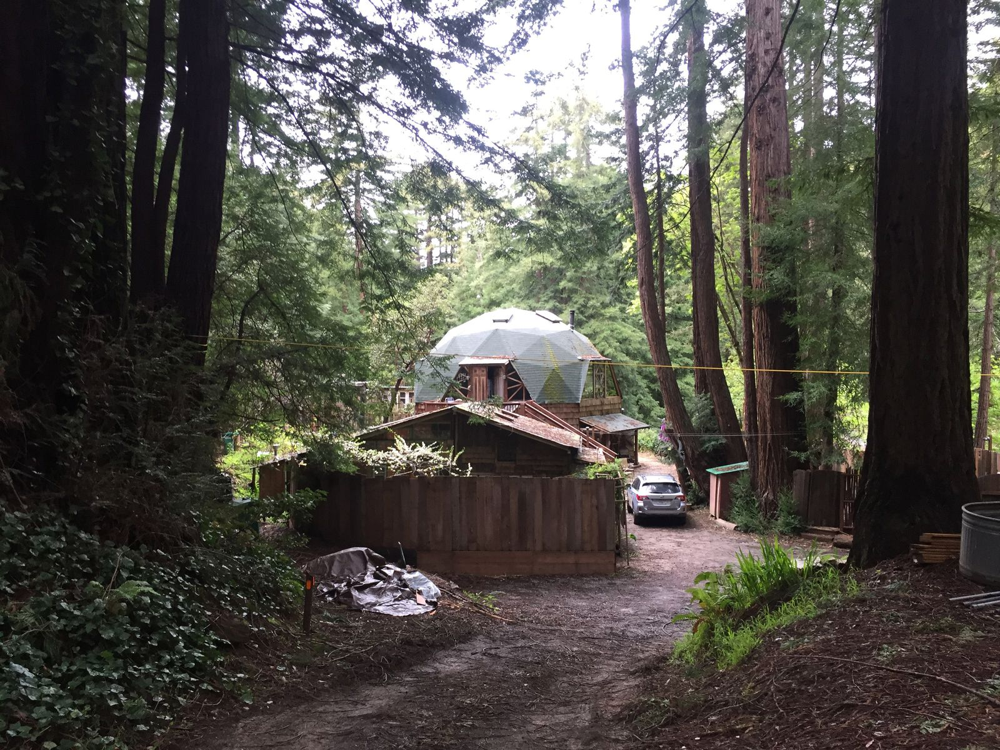
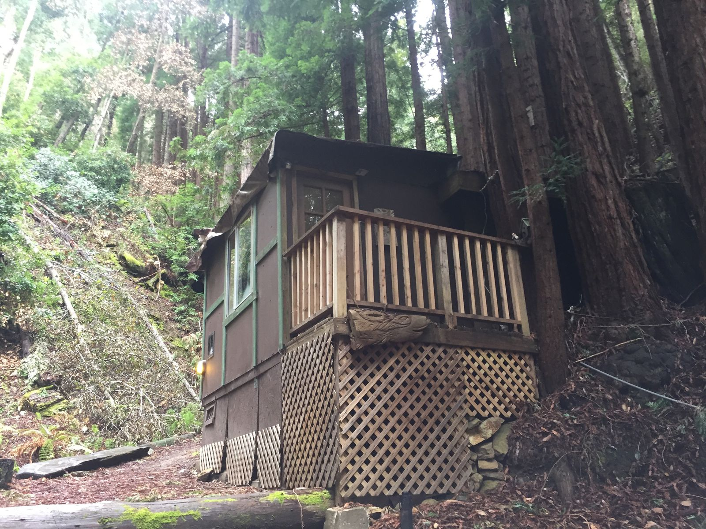

Lotus Blossom Cabin
Today was another whirlwind of a day. I am off the grid, with no cell service or access to Internet. For the next two nights I am staying in a cabin in the woods—Lotus Blossom at the Jewel in the Forest. It’s just north of Big Sur, about two miles up a long and windy road. The cabin itself is a ten minute hike up a very steep muddy gravel path.
This morning, I woke up in Denmark. Kind of. I spent last night in Solvang, a Danish town about 45 minutes north of Santa Barbara. The town itself looks like you’re in another country. The architecture is remarkably Scandinavian. There are street names like Atterdag Rd and Elverhoy Way. There are more Denmark flags than US flags—though there are a lot of both.



In the morning I went to a yoga class at Bloom Solvang. It wasn’t quite a yoga class but it wasn’t not a yoga class. Called “evolution”, it focused on opening up the chest t combat slouch inherent in today’s world. We used props I’d never heard of and I felt muscles I never knew existed. It was exactly what I needed. Everyone was friendly, and the dozen or so of us talked during class, since we weren’t focusing on breathing. As I was the only male and newcomer, I got extra help and questions. I really had no idea what I was doing to start and the people there were interested in my travels.

I left Solvang shortly after 1pm, bidding farewell to the tiny Airbnb dog and getting some coffee and toast at Good Bean coffee. Next up was Hearst Castle, a massive estate in San Simeon. William Hearst built the complex over 20+ years in the early 20th century. It had relics from ancient Egypt, exotic animals from all of the world (zebras still roam the property, though the lions and polar bears are long gone), and art and architecture from all over Europe. The view was amazing.


My tour of Hearst Castle wrapped up just before 6, as I continued north on the 1. Entering the Big Sur area, I passed through indescribable landscapes. I’ve been all over the world, but nothing has yet to compare to the beauty I saw today as I drove up the coast. I cannot capture it in words and pictures do not do it justice. I stopped several times along the way as the sun set.


It was dark when I reached the Jewel in the Forest. Thankfully I had a headlamp and packed a light bag for tonight. As soon as I arrived, I met Sofanya, the property owner, who gave me a big hug. She’s been here since at least 1995, which surprised me because she looks younger than I would have expected. She let me know that there was no electricity in the cabin but that it had been fixed just before I arrived. So far so good.

Sofanya has an art studio and a beautiful home at the base of the property. I couldn’t see too much in the dark, but I did get to meet her dog, who was very tired after a busy day making a new dog friend. I hope to see more of the dog tomorrow.

In the morning, I hope to sleep in and make some breakfast in the cabin. Then I’m off to Lobos Point and Big Sur, followed by Nepenthe for dinner.
Click here to see a video of the hike up to the cabin at night.